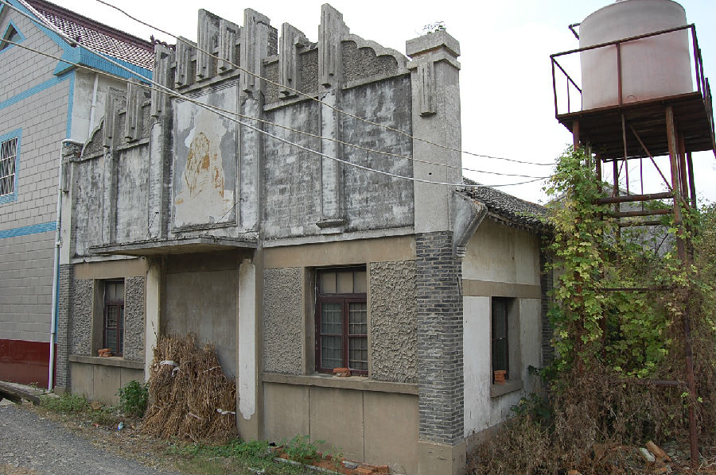

嘉兴市文物保护网 · 市级文物保护点 · 2020-11-06 · 原文

张墩村礼堂位于浙江省嘉兴市秀洲区新塍镇康和桥村原张墩自然村，坐西朝东。原为文革时礼堂，1995年卖给私人作纺织厂房。礼堂面阔20.69米，进深8.86米，顶高5.88米。砖木结构，人字型梁架，共六开间。礼堂所在地文革时为前进大队，后改为张墩村，现并入康和桥村。张墩村礼堂是文革时期遗留下来的建筑，带有明显的文革气息和特征，是研究文革历史的重要实物，有一定的历史、科学价值。2009年与知青宿舍、食堂、厂房合并公布为嘉兴市文物保护点。